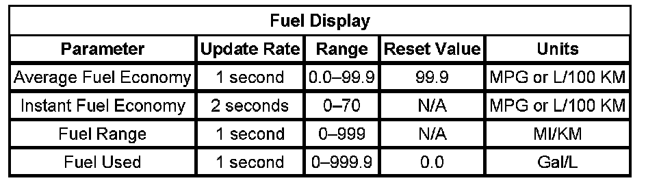
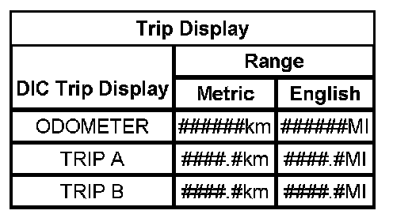

Driver/Vehicle Information Display: Description and Operation
DRIVER INFORMATION CENTER (DIC) DESCRIPTION AND OPERATION
The driver information center (DIC) displays the DIC WOW for 5 seconds when it first powers up. If enabled through Personalization, the DIC then returns to the last display status before no power condition.
There are 4 switch functions for the DIC.
- Personalization
- Set/Reset
- Trip/Fuel
- Vehicle Info
Trip/Fuel
The Trip/Fuel switch is used to navigate between vehicle information parameters. Cycle through the following vehicle parameters by successive pressing of the Trip/Fuel switch
- Accell Rate
- Average Fuel Economy (AFE)
- Average Vehicle Speed (AVE)
- Fuel Range
- Fuel Used
- Instantaneous Fuel Economy (IFE)/ Displacement on Demand (DOD)
- Maximum Speed
- Odometer
- Trans Temp
- Trip A
- Trip B
- Trip Time
Vehicle Info
The Vehicle Info switch is used to navigate between vehicle information parameters. Cycle through the following vehicle parameters by successive pressing of the Vehicle Info switch.
- Blank Display
- English/Metric Units
- Key Fob Programming Menu
- Left Front Tire Pressure
- Left Rear Tire Pressure
- Oil Life Index (OLI)
- Right Front Tire Pressure
- Right Rear Tire Pressure
- Tire Programming Menu
Personalization
The Personalization switch is used to set personalization features for both the vehicle and the driver. Many of the parameters in the Trip/Fuel menu and the Vehicle Info menu can be programmed through the Personalization switch. In addition to the parameters in the Trip/Fuel and Vehicle Info menus, the following features can also be programmed.
- Approach Lighting
- Automatic Door Lock
- Automatic Door Unlock
- Chime Volume
- Delayed Door Lock
- Display Language
- Easy Exit Seat
- Exit Lighting
- Memory Seat Recall
- Remote Door Lock
- Remote Door Unlock
- Remote Start
- Park Tilt Mirrors
- Smart High Beams
Average Fuel Economy
Average fuel economy is calculated using the equation: AFE = Distance/Fuel
- Distance = The accumulated distance travelled since the last reset of this value
- Fuel = The accumulated fuel consumption since the last reset of this value
The engine control module (ECM) sends the average fuel economy GMLAN message to the instrument panel cluster (IPC). The value of this mode is retained during ignition OFF and can be changed between English units and metric units by selecting from the driver information center (DIC) options menu.
Average Speed
Average speed is calculated using the equation: Average Speed = AVS Distance/AVS Time
- Distance = The accumulated distance travelled since the last reset of this value
- Ignition On = The accumulated ignition on time since the last reset of this value
Oil Life Remaining
The ECM sends the oil life remaining percentage to the IPC via GMLAN message. The instrument panel cluster receives a GMLAN message indicating the engine oil life remaining. The DIC displays the current percentage of the GM Oil Life System as determined by the ECM. When the oil life remaining percentage drops below 5 percent, the DIC displays CHANGE ENGINE OIL SOON. When the engine oil is changed, reset the GM Oil Life System. Refer to GM Oil Life System Resetting.
Fuel Range
This message indicates the estimated distance that the vehicle can travel under the current fuel economy and fuel level conditions since the last battery connection to the IPC. Fuel Range is calculated using the equation: Fuel Range = Range Distance/Range Fuel Used.
- Range Distance = The accumulated distance travelled since the last reset of this value.
- Fuel Used = The accumulated fuel delivered since the last reset of this value
The ECM sends the fuel range value to the IPC. The IPC receives a GMLAN message with fuel information. The fuel range value is retained during ignition OFF and can be changed between English and Metric units by accessing the DIC English/Metric menu. The Fuel Range display cannot be reset. LOW is displayed when fuel range is below a predetermined value.
Fuel Used
The DIC calculates and displays the total amount of fuel used since the last reset operation. You can reset the fuel used mode by depressing and holding the Set/Reset button for more than 3 seconds. The value of this mode is retained during ignition OFF.
Instantaneous Fuel Economy (IFE)
Instantaneous fuel economy (IFE) is calculated using the equation: IFE = Distance/Fuel Used.
- Distance = The accumulated distance travelled for the last 2 seconds
- Fuel = The accumulated fuel delivered for the last 2 seconds
The IPC receives a GMLAN message from the ECM. The distance information is calculated by the IPC using the vehicle speed information from the ECM. These values are retained during ignition OFF and can be changed between English and Metric units accessing the DIC English/Metric menu. The IFE display cannot be reset.
Tire Pressure Monitor
The IPC receives a GMLAN message from the tire pressure monitoring (TPM) system for front and rear tire pressure data. The DIC will display the pressure for each of the front and rear tires. When a tire with low air pressure is present, the DIC displays XXXX XXXX TIRE PRESSURE LOW.
Trip Time
The timer records elapsed time starting from activation. When the DIC displays the timer, pressing the Set/Reset switch for 1 second on the DIC resets the timer. Pressing the Set/Reset button on the DIC switch for approximately 1 second starts and stops the timer. The DIC displays the timer in one of the following formats:
The DIC displays the timer in the following format: XX: XX:XX:
The first XX represents hours elapsed, the second XX represents minutes elapsed, and the third XX represents seconds elapsed. The maximum range of the timer is 99 hours, 59 minutes, and 59 seconds. After the maximum range is reached, the timer displays all zeros (00:00:00).
Park Assist Menu
Fuel Display:

The park assist menu is displayed in the DIC. The DIC displays the current state of the park assist until the IPC receives a message indicating otherwise. The DIC displays (- - -) when communication with park assist is lost.
English/Metric
The English/Metric mode is used to toggle between English and Metric units and can be accessed through the driver information center (DIC) Vehicle Info switch.
Trip A/B
Trip Display:

The trip odometer A or B can be accessed through the DIC Trip/Fuel switch function.
Language
The driver information center (DIC) is capable of displaying in 8 languages
- English
- German
- Italian
- French
- Spanish
- Arabic
- Chinese
- Korean